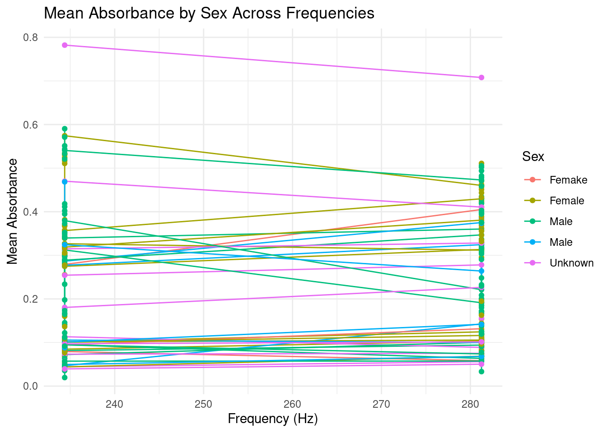
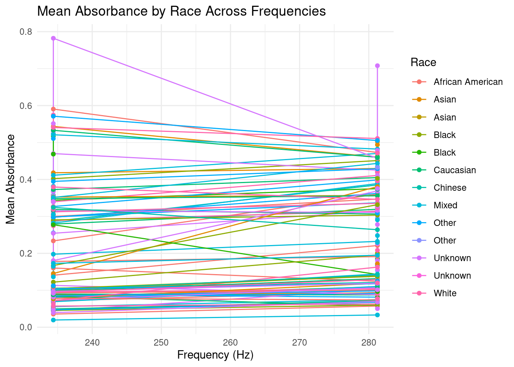

The goal of this analysis is to explore how mean absorbance varies across studies and demographic groups within the Wideband Acoustic Immittance (WAI) database. To begin with, I will I will recreate Figure 1 by analyzing the trends, focusing on mean absorbance values across a specific range of frequencies.
suppressPackageStartupMessages({library(RMariaDB)library(tidyverse)library(ggplot2)})con_wai <-dbConnect(MariaDB(), host ="scidb.smith.edu",user ="waiuser", password ="smith_waiDB", dbname ="wai")figure1_data <-dbGetQuery(con_wai, "WITH StudyFrequencies AS ( SELECT m.Identifier, p.AuthorsShortList, p.Year, m.Instrument, m.Frequency, AVG(m.Absorbance) AS MeanAbsorbance, COUNT(DISTINCT m.SubjectNumber, m.Ear) AS UniqueEars FROM Measurements m JOIN PI_Info p ON m.Identifier = p.Identifier WHERE m.Frequency IN ( 210.938, 234.375, 257.812, 281.250, 305.688, 330.125, 354.562, 379.000, 403.437, 427.875, 452.312, 476.750 ) GROUP BY m.Identifier, p.AuthorsShortList, p.Year, m.Instrument, m.Frequency)SELECT Identifier, AuthorsShortList, Year, Instrument, Frequency, MeanAbsorbance, UniqueEarsFROM StudyFrequenciesORDER BY Identifier, Frequency")figure1_data <- figure1_data |>mutate(StudyLabel =paste( AuthorsShortList, Year, paste0("N=", UniqueEars), Instrument, sep =", " ))ggplot(figure1_data, aes(x = Frequency, y = MeanAbsorbance, color = Identifier)) +geom_line(linewidth =1) +geom_point(linewidth =2) +scale_x_continuous(breaks =c(210.938, 281.250, 354.562, 427.875, 476.750),labels =c("210", "281", "355", "428", "477") ) +scale_y_continuous(limits =c(0, 0.5)) +labs(title ="Mean Absorbances for WAI Studies",x ="Frequency (Hz)",y ="Mean Absorbance",color ="Study" ) +theme_minimal() +theme(legend.position ="right",legend.text =element_text(size =8),legend.key.height =unit(1, "lines") ) +guides(color =guide_legend(ncol =1))
Warning in geom_point(linewidth = 2): Ignoring unknown parameters: `linewidth`
Warning: Removed 1 row containing missing values or values outside the scale range
(`geom_line()`).
Warning: Removed 1 row containing missing values or values outside the scale range
(`geom_point()`).
dbDisconnect(con_wai)
# Required librarieslibrary(RMariaDB)library(DBI)library(tidyverse)library(ggplot2)# Database connectioncon_wai <-dbConnect(MariaDB(), host ="scidb.smith.edu",user ="waiuser", password ="smith_waiDB", dbname ="wai")# SQL Query to Recreate Figure 1query <-"WITH StudyEarCounts AS ( SELECT pi.Identifier, pi.Authors AS AuthorsShortList, pi.Year, m.Instrument, COUNT(DISTINCT CONCAT(m.SubjectNumber, m.Ear)) AS Unique_Ears FROM Measurements m JOIN PI_Info pi ON m.Identifier = pi.Identifier GROUP BY pi.Identifier, pi.Authors, pi.Year, m.Instrument),MeanAbsorbances AS ( SELECT pi.Identifier, m.Frequency, AVG(m.Absorbance) AS MeanAbsorbance FROM Measurements m JOIN PI_Info pi ON m.Identifier = pi.Identifier WHERE m.Frequency BETWEEN 226 AND 8000 GROUP BY pi.Identifier, m.Frequency)SELECT ma.Identifier, sec.AuthorsShortList, sec.Year, sec.Instrument, sec.Unique_Ears, ma.Frequency, ma.MeanAbsorbanceFROM MeanAbsorbances maJOIN StudyEarCounts sec ON ma.Identifier = sec.IdentifierORDER BY ma.Identifier, ma.Frequency"# Execute the queryfigure_data <-dbGetQuery(con_wai, query)# Check if data is returnedif (nrow(figure_data) ==0) {stop("No data was retrieved from the database. Please check the query or database connection.")}# Create study labelsfigure_data <- figure_data %>%mutate(StudyDetails =paste(AuthorsShortList, Year, paste0("N=", Unique_Ears), Instrument, sep =", ") )# Create the plotp <-ggplot(figure_data, aes(x = Frequency, y = MeanAbsorbance, color = StudyDetails)) +geom_line(linewidth =0.7) +scale_x_log10(breaks =c(226, 500, 1000, 2000, 4000, 8000),labels =c("226", "500", "1k", "2k", "4k", "8k") ) +scale_y_continuous(limits =c(0, 1.2),breaks =seq(0, 1.2, 0.2) ) +labs(title ="Mean Absorbances Across WAI Database Studies",x ="Frequency (Hz)",y ="Mean Absorbance",color ="Study Details" ) +theme_minimal() +theme(legend.position ="right",legend.text =element_text(size =8),legend.title =element_text(size =10),axis.text.x =element_text(angle =45, hjust =1) )# Print the plotprint(p)
# Close the database connectiondbDisconnect(con_wai)
library(RMariaDB)library(DBI)# Database connectioncon_wai <-dbConnect(MariaDB(), host ="scidb.smith.edu",user ="waiuser", password ="smith_waiDB", dbname ="wai")# Function to list columns for a given tablelist_table_columns <-function(con, table_name) { columns <-dbListFields(con, table_name)cat(paste("Columns in", table_name, "table:\n"))print(columns)cat("\n")}# List columns for each tablelist_table_columns(con_wai, "Measurements")
The graph above,illustrates mean absorbances for different WAI studies across a specific frequency range with each line representing a specific study. For most of the studies, there is a slight increase in the mean absorbanses at 281Hz.
For the second aspect of this analysis, I will explore group differences by sex and race, investigating how these demographic variables influence mean absorbance trends. And then, I will calculate mean absorbance for each group across frequencies and visualize these trends with labeled plots.
library(DBI)library(RMariaDB)library(ggplot2)con_wai <-dbConnect(MariaDB(), host ="scidb.smith.edu",user ="waiuser", password ="smith_waiDB", dbname ="wai")joined_data <-dbGetQuery(con_wai, "WITH StudyDetails AS ( SELECT m.Identifier, p.AuthorsShortList, p.Year, s.Sex, s.Race, m.AgeCategory, m.Frequency, AVG(m.Absorbance) AS MeanAbsorbance, COUNT(DISTINCT m.SubjectNumber) AS NumSubjects, COUNT(DISTINCT m.SubjectNumber, m.Ear) AS UniqueEars FROM Measurements m JOIN Subjects s ON m.SubjectNumber = s.SubjectNumber JOIN PI_Info p ON m.Identifier = p.Identifier WHERE m.Frequency IN ( 210.938, 234.375, 257.812, 281.250, 305.688, 330.125, 354.562, 379.000, 403.437, 427.875, 452.312, 476.750 ) GROUP BY m.Identifier, p.AuthorsShortList, p.Year, s.Sex, s.Race, m.AgeCategory, m.Frequency)SELECT * FROM StudyDetailsORDER BY Identifier, Frequency")sex_plot <-ggplot(joined_data, aes(x = Frequency, y = MeanAbsorbance, color = Sex)) +geom_line(aes(group =interaction(Sex, Identifier))) +geom_point() +labs(title ="Mean Absorbance by Sex Across Frequencies",x ="Frequency (Hz)",y ="Mean Absorbance",color ="Sex" ) +theme_minimal()race_plot <-ggplot(joined_data, aes(x = Frequency, y = MeanAbsorbance, color = Race)) +geom_line(aes(group =interaction(Race, Identifier))) +geom_point() +labs(title ="Mean Absorbance by Race Across Frequencies",x ="Frequency (Hz)",y ="Mean Absorbance",color ="Race" ) +theme_minimal()print(sex_plot)

print(race_plot)

dbDisconnect(con_wai)
The ” Mean Absorbances by Sex Across Frequencies” graph illustrates how mean absorbance varies across frequencies for different sex groups. The variation in absorbance between the sexes is visible across frequencies.
The “Mean Absorbance by Race Across Frequencies” graph also shows the mean absorbance across frequencies for different races.
To recreate Figure 1 from Voss (2020), I queried the WAI database to extract data, filtered for relevant frequencies and combined measurements with authors, year, and instrument. I then calculated the mean absorbance and the number of unique ears for each study and frequency and then used a line plot to show the relationship.
To analyze group differences, I examined the impact of sex and race on mean absorbance across frequencies. U I grouped data by study, sex, race, and frequency, calculating mean absorbance for each group. I then generated two plotsto visualize these trends.
DATA SOURCE:https://www.science.smith.edu/wai-database/